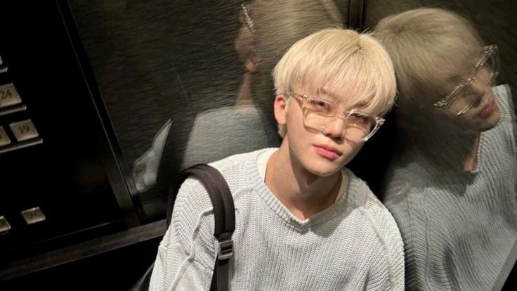
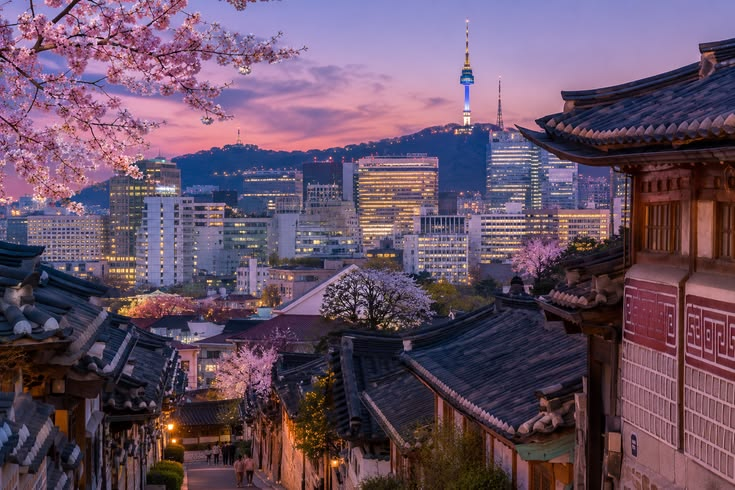

Hi! Let me introduce myself. My name is Salsabila Qonitatun Nasywa. I was born in Demak on 9 June, 2011, and I currently live in Kalitengah. I am currently studying at SMK Bina Nusantara. When it comes to hobbies, I really enjoy watching things, especially Korean dramas and K-Pop content. I'm also a K-Pop fan who loves keeping up with the latest news and updates about the K-Pop world. One of my favorite groups is NCT. Out of all the members, my favorites are Jaemin and Yushi. They both have their own charms that make me love following their activities. I enjoy listening to NCT's songs, watching their music videos, keeping up with their latest updates, and of course, watching their various contents, from vlogs and entertainment shows to funny moments between the members. One of my biggest wishes as an NCTzen is to meet NCT in person, especially Jaemin and Yushi. It would be such an amazing experience to see them up close and watch their performances live someday. Hopefully, that dream will come true one day! I could say that NCT and my two biases have become one of the little sources of happiness in my everyday life. That's a little introduction about me. Thank you for reading my introduction!

Seoul is the capital and largest city of South Korea. Seoul is one of my dream destinations, and I really hope to visit it someday. This city has a beautiful combination of traditional culture and modern life, which makes it so interesting. Seoul is known as the center of government, business, education, technology, and the entertainment industry in South Korea. It has many famous tourist attractions, such as N Seoul Tower, Gyeongbokgung Palace, Myeongdong, and Hongdae. Besides that, Seoul is also the center of the K-Pop and K-Drama industries. Many famous entertainment companies, such as SM Entertainment, JYP Entertainment, and HYBE, are located in this city. As a K-Pop fan, I really want to experience the atmosphere of Seoul, visit interesting places, try Korean food, and hopefully meet my favorite idols there someday.